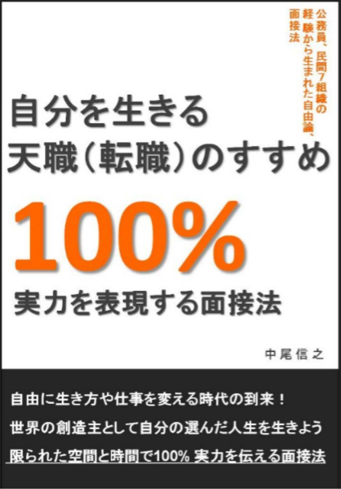
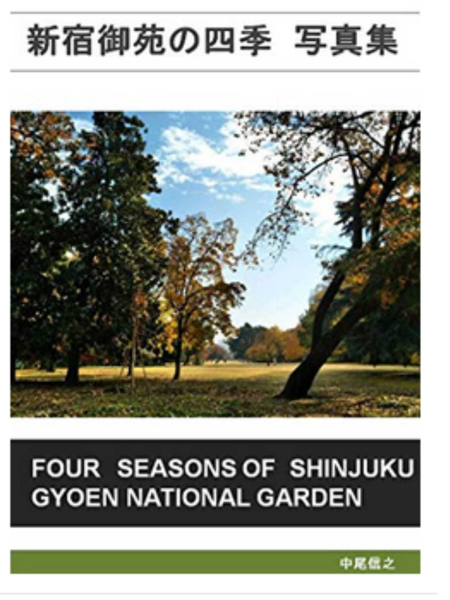

| ＧＵＮＤＡＭの世界 ガンダムシリーズ・伝説の１０曲 | |
| 中尾信之 | |
| (2018) | |
ＧＵＮＤＡＭの世界
ガンダムシリーズ・伝説の１０曲
□はじめに
・ガンダムの意志
□第一章 宇宙世紀シリーズ
１．機動戦士Ｚガンダム Ｚ刻を超えて
２．機動戦士ガンダム００８３
スターダストメモリー Back to paradise
３．機動戦士ダブルゼータガンダム 一千万年銀河
４．機動戦士Ｖガンダム いくつもの愛をかさねて
５．機動戦士ガンダムユニコーン 流星のナミダ
□第二章 宇宙世紀以外の世界
６．機動新世紀ガンダムＸ Human Touch
７．ターンＡガンダム 限りなき旅路
８．ガンダムＳＥＥＤ Find the way
９．ガンダム００ Trust you
１０．ガンダムＧのレコンギスタ Ｇの閃光
□おわりに
・高い洞察力と共感能力を手に
□はじめに
・ガンダムの意志
私は先日、自分が幼い頃や青年期に見ていたアニメの中で、心に残っていて今も聞きたい曲を１０曲紹介する書籍「懐かしのアニメソング １９８０年代・１９９０年代アニメ」を公開した。未来警察ウラシマンや、ジリオン、天空戦記シュラト、シティハンターなど思い出深い曲を聞きなおし、その映像を見直すことで、昔の空気を改めて味わうことができた。その中で、ガンダムシリーズの曲も、３曲紹介したが、うち２曲は映画の歌であった。そして、続編として新たにアニメの曲を１０曲新たに選ぼうとしていた。
その時、思い出す曲の多くがガンダムの曲であり、１０曲のうちに、どうやってガンダムの曲を３曲以内におさめようかと苦慮してしまうほど、自分の短期記憶の中には、ガンダムの曲が溢れていた。それもそのはず、若いころからガンダムはアニメを見るだけではなく、ほとんどの作品について小説も読み、サウンドトラックや、主題歌集を購入してきた。
最近はユーチューブでも、たまに音楽を聞きなおしたりしているので、ガンダムの情報世界が、自分の認識世界と一体化してきているからなのだと思う。そして、実際に、ガンダムの世界は、映像に限らず、歌やサウンドトラックのクオリティが高いということであると思う。
だから私は、前作の続編を書くよりも先に、私の好きなガンダムの歌だけを集めた一押しアニメソング集について書いてみることにしたのである。ガンダムの曲を３曲ではなく、１０曲選べるということにした段階で、私は自由を得た気分になり、宇宙世紀シリーズにこだわらず、広く別年表のガンダムも含めて１０曲を選ぶことにした。さらに、オープニング曲、エンディング曲にこだわらず、挿入歌として特別な力を放っている曲も、その候補とすることにした。
志を同じくするガンダムファンには、そのような名曲こそ、ともに語り合うべき伝説の曲であると思うからである。そして、そのような隠れた名曲、オープニングでもエンディングでもない曲にも、全力を尽くしている冨野監督や、多くの方々の意志に敬意を表したいと思うのである。
ガンダムの世界の臨場感は、素晴らしいものがある。アニメ世界に引き込む力が強い作品であるということである。ガンダムは、もともと、どの作品も戦争を描いているため、真面目に描くほど、どうしても暗い作品になってしまう。その暗い面に引きずられると、見ている側も気分が沈んでしまったりしてしまうこともある。だからリメイクされる前の、銀河英雄伝説のように、戦争を描くなら、できるだけ客観的に描いた作品のほうが気楽に楽しむことができるのである。
しかし同時に、ガンダムは「抵抗の象徴」であると言われるように、ガンダムの情報世界の中では、どんなに苦しい境遇にあっても、自分や世界に負けることなく、強くしなやかな意志で人生を切り開いている登場人物たちがいる。
そして、ガンダムには大きな人類愛や、人間愛に満ちた強さと優しさに溢れた曲がある。私たちは、ガンダムを通して戦争の愚かさを知る。しかし、それだけではなく、登場人物たちのプラスのエネルギーを、上手く自分に吸収することで、より力強く、自分の世界を生きていけるようになれると私は思う。
だからこそ、今回、ここで選ぶ曲は基本的に明るい曲や、優しい曲だけを集めた。いろいろ悩んで、書き始める段階では、まだ２曲ほど暗めでも好きな曲を入れていた。しかし、暗い作品でも、必ず優しい曲が１曲は用意されていたりして、そこに救いや癒しがあることを再認識したのである。
それでは、さっそく明るい気持ちで、ガンダムの情報世界の中を一緒に旅してみようではありませんか。
強くしなやかなガンダムの力を手にするために。
大学生時代に作成し着色した実家のモビルスーツ隊
□第一章 宇宙世紀シリーズ
１．機動戦士Ｚガンダム 宇宙世紀００８７年
１９８５年３月２日から１９８６年２月２２日放送 全５０話
曲名：Ｚ刻を超えて 鮎川麻弥
子供の頃、この作品を見ていた時の記憶はあまり残っていない。そして、初代ガンダムとの歴史のつながりも、その時には良く分かっていなかった。しかし、当時はガチャポンという短足のガンダムの玩具が流行っていたので、ガンダムマークツーや、ゼータガンダムを購入した。そして、普通のプラモデルでも、マラサイや百式を購入したりしていた。大学に入ってから親友の福島君が、ゼータガンダムのビデオを貸してくれたので、あらためて初代ガンダムからの歴史を再度確認して理解するようになった。自分でもダビングして、いつでも見られるようになると、３日間で５０話を続けて見たりと、かなりハードな見方をしていた時期もあった。
三枝成彰さんのサウンドトラックも、その頃は良く聞いていた。大学時代に、地元の観光ホテルでバイトをしていた時、朝からお部屋の掃除とベッドメイキングをして、夜の布団しきまで時間がある時に、小学校の頃作ったプラモデルを再び作って、塗装をきちんとしたりして楽しんだ。しかし、そのあと、ＨＧモデルが出て、よりプラモデルは楽しめる時代になっている。最近も、たまに作っているが、当時のように塗装はしなくても、買ったものを組み立てるだけで楽しめている。
ゼータガンダムのオープニングはラフターインザレイン（邦題：雨に微笑みを）で全米第一位を獲得したニールセダカさんの作曲で、普通のアニメの曲とは一線を画した洗練された雰囲気があった。
「Ｚ刻を超えて」、「星空のBelieve」、「水の星に愛をこめて」の３曲がニールセダカさんの作曲だとは聞いていたが、３曲ともゼータガンダムのために提供されたと思っていた。しかし、実は、「水の星に愛をこめて」以外は、既にあったニールセダカさんの曲に日本語歌詞を付けたものだと今回初めて知ることができた。両方、原曲をユーチューブで聞くことができたが、雰囲気がまったく違うアレンジであり、別物であるように感じると同時に、原型はとどめているので、確かに同じ曲だと分かり、感慨ひとしおであった。
「Ｚ刻を超えて」は、 「 Better Days Are Comin g 」、「星空 の Believ e 」は、 「 Bad And Beautifu l 」がニールセダカさんの原曲である。
ゼータガンダムでは、初代ガンダムで敵同士だったアムロとシャアがエウーゴの仲間として戦っているのが印象的である。ガンダムファンなら、アムロとシャアが出会い、顔を見る前にお互いを認識して、自分でも気づかぬうちに声を掛け合っているシーンなど、もっとも盛り上がるシーンである。また、この二人が、逆襲のシャアでは敵同士の関係に戻っている。
ゼータガンダムではアムロだけではなく、ハヤト・コバヤシやカイ・シデンのホワイトベースのクルーのふたりも地球に降りたカミーユとシャアを支援する立場で出てくるので、初代ガンダムファンが好きな人は、この歴史の流れを楽しめるところがゼータガンダムの醍醐味のひとつであると思う。
エマがアーガマに戻ってきた時に、「アーガマの空気」について語るシーンがあるが、私はそのシーンが好きで、今でも時々思い出すことがある。のちにカミーユはアナハイムエレクトロニクスの幹部という設定のウォン・リーになぐられるが、それでもアーガマは階級にとらわれない自由な空気があり、そのような正規軍にない環境こそ、ホワイトベースでアムロが活躍できたのと同じで、カミーユが活躍できた素地なのだと思えた。同じように、あらゆる組織も、素早い判断が求められる環境では、アーガマのような空気が必要なのだと思うのである。
２．機動戦士ガンダム００８３ スターダストメモリー
１９９１年５月２３日から１９９２年９月２４日リリース 全１３話
曲名 ： Back to paradis e 松原みき
スターダストメモリーは、初代ガンダムとゼータガンダムの間の物語として、オリジナルビデオ作品として公開された作品である。これも友人がビデオを貸してくれたことで好きになった作品である。初代ガンダムが宇宙世紀００７９から４年後の００８３年であり、００８７年を舞台とするゼータガンダムの４年前である。
ガンダムユニコーンが７話、ガンダム００８０ポケットの中の戦争が６話、
０８小隊が１２話だったことを考えると、オリジナルビデオアニメとしては大作といえる。
最初のオープニング曲は、 「 The Winne r 」であるが、この曲の英語バージョンが、 「 Back to paradis e 」である。がれきの山で訓練をしている際に流れたのがこの曲であるが、映像とマッチして非常に爽快感のある曲になっていた。００８３では、ガンダム以外の機体、ジムや、ザクのカスタムタイプがイキイキと描かれていた。００８３を知らない方や、好きではない方も大勢いるかもしれないが、私は、この作品を正当なる宇宙世紀の作品であると思っている。ガトーは文句なしに渋いし、ウラキも最後まで生き延び、そしてハッピーエンドのように幕をとじるのも私が好きな点である。
ガトーの声は大塚明夫さんが担当され、コウ・ウラキの声は、ドラゴンボールのベジータ役の堀川りょうさんが担当されていた。ベジータのような高圧的なキャラクターからウラキのような優しいキャラクターまでこなしてしまうのが声優さんのすごいところであると、この時思ったものである。ニナ・パープルトンの声は、アンパンマンのバタコさんや、らんま１／２でシャンプーの役をされていた佐久間レイさんが担当されている。
ペガサス級強襲揚陸艦アルビオンがホワイトベースやアーガマに似ているのも好きであるし、シナプス艦長が公平で判断力に優れているのも好きな点であった。
「ソロモンよ。私は帰ってきた」というガトーのセリフも好きである。池袋に暮らしていた頃、どこか遠くにでかけた後に、池袋の駅に降り立った時は、いつも思い出していたセリフである。不思議なもので、池袋東口の雑踏が、こころの中でもふるさとに次ぐほど、自分の帰るところになっていたのである。
３．機動戦士ダブルゼータガンダム 宇宙世紀００８８年
１９８６年３月１日から１９８７年１月３１日放送 全４７話
曲名：一千万年銀河 ひろえ純
ゼータガンダムが少し重苦しい作品であったのに対して、ダブルゼータは最初の方は、ジュドーとその仲間を中心に明るい雰囲気で始まり、ゼータよりも少し気楽に見られる作品だった。ジュドーたちだけではなく、最初の頃のマシュマーもコミカルで面白かった。宇宙世紀の歴史とは、なんの関係もないが、マシュマーとエンドラの部下との掛け合いも悪くなかった。
ジュドーは妹思いで比較的、真面目かもしれないが、ビーチャとモンドウという適当な友人たちもいて、一度は敵の艦に拾われて下働きをさせられるドジな設定も含まれていた。彼らも含めてガンダムチームが作られていたというのが、初代やゼータのガンダムとは違うところである。それでも、ルー・ルカやエルやプルなど明るい登場人物がいることで楽しめる作品だった。クワトロ大尉を名乗るシャアののっていた百式に、ビーチャが乗るなど、許せないファンもいるかもしれないが、私はなぜか普通に見ることができた。
ダブルゼータでは、ハマーンがダブリンにコロニー落としを敢行し、ゼータではハマーンの行動にシャアは反対していたように見えたが、逆襲のシャアでは、シャアもコロニー地球に落としを行う。行動としては、ふたりとも同じ道をたどったようにみえる。それでもザビ家をかついで人類を覚醒させることを考えていたハマーンに対して、シャアはザビ家が暗殺したシャアの父親で純粋なスペースノイドの独立を望んだジオンダイクンの意志を体現していくという点で、その根底の思想が違うのだと理解するしかないのかもしれない。
初期のオープニング曲は秋元康さん作詞の「アニメじゃない」という不思議なタイトルだったので、子供ながらに「アニメなのに、アニメじゃないって変だな」と不思議に思っていた。「夢を忘れた古い地球人よ」というところは、ガンダムらしくて好きな部分である。「１千万年銀河」は冨野監督の作詞であり、こちらの歌詞のほうがガンダム風の雰囲気が出ていると思うが、今となっては、「アニメじゃない」はジュドーの雰囲気にはあっているようにも思える。
サウンドトラックもゼータガンダムと同じく三枝成彰さんが担当されていたが、ジュドーの雰囲気にあわせたコミカルな曲が入っていた。それでも戦闘が激しくなる後半は、重たいシーンもあったが、アーガマのメインメンバーが生き残って終わったことや、カミーユが回復したようなシーンがある点が救いだった。
４．機動戦士Ｖガンダム 宇宙世紀１５３年
１９９３年４月２日から１９９４年３月２５日放送 全５１話
曲名：いくつもの愛をかさねて 岩崎元是
作品の舞台は宇宙世紀１５３年。「機動戦士ガンダムＦ９１」の３０年後の時代設定となっており、それまでの宇宙世紀の話とは、区切りができた作品になっている。主人公のウッソ・エヴィンは１３歳という設定であった。
ヴィクトリーガンダムは非常に重苦しい作品であったと思う。ユーチューブを見ていた時に、「もっと子供の頃に見ていたら、トラウマになったと思う」みたいなコメントを書かれていた方がおられた。確かに、小さな子供がのめり込んでみると、とても消耗してしまうような内容も多かった。ウッソの明るさがなければ、より一層、暗い作品になってしまっていたのではないかと思う。当時は、どうしてマクロスのように、マリアやシャクティが歌うのかと思ったものだが、今となっては、それはそれでもいいのかもと認められる年齢になってきた。
千住明さんが担当されたサウンドトラックも１枚目は比較的、すがすがしい明るい曲が多かったが、作品の展開にあわせて、２枚目、３枚目は暗い曲が多かった。その中で、歌入りの曲は数曲だけであるが、この「いくつもの愛をかさねて」はガンダム作品で使われたということをのぞいたとしても好きな曲のひとつである。
最終回で、カテジナさんがウッソたちの前にあらわれて流れるシーンが今も記憶に残っている。冨野監督が作詞家名義での作詞された曲は好きなものが多い。
最初のオープニング曲は当時人気があったバンド、リンドバーグのベースの川添さんのソロの作品であった。またエンディングはインフィックスというグループの 「 Winners foreve r 」という曲で、二曲とも好きな曲であった。この曲を聞いてからインフィックスは深夜ラジオで彼らの番組を聞いて応援していた。曲は売れないが、仲良くラジオをしている感じが印象的なグループだった。後半のエンディングで起用されていたキックスの「もう一度 、 tendernes s 」という曲も好きな曲である。
５．機動戦士ガンダムユニコーン 宇宙世紀００９６
２０１０年２月２０日から２０１４年５月１７日映像展開
ＯＶＡ全７話
曲名：流星のナミダ CHiAKi KURiYAMA
年表としては、宇宙世紀であり逆襲のシャアの３年後の位置づけである。宇宙世紀の物語ではあるものの、不用意に宇宙世紀の基本設定に介入しているため作品としては、微妙な存在であるように思われる。小説はディテールを書くことが得意な福井晴敏さんが心沸き立つようなストーリーを書いているが、宇宙世紀の歴史に重みを置く人間にとっては、過去の作品になかった連邦首相の官邸が破壊されたというような歴史を急に作るのはやめてほしいところである。
しかし、「流星のナミダ」は非常に素晴らしい曲であると思う。全ての過去を許されるような、全ての存在を許容されるような優しさが溢れる曲であると思う。女優の栗山千明さんが 「 CHiAKi KURiYAM A 」の名義で２０１０年２月２４日にリリースしている。これを記念してオーストラリアの天文台が販売したユニコーン座の命名権を送られ 「 CHiAKi KURiYAM A 星」と名付けることになったようである。
ストーリーの設定は、ともかく、キャラクターデザインやメカニカルデザインは良かったと思う。そして戦闘シーンの描き方も、見やすい描き方をしているように感じた。ガンダムファンの目が肥えてきていることを意識して、今までよりも描き方をこだわっていながら、きちんと理解できる描写になっていると思えた。
ドラゴンボールで、戦闘力が上がった後、見えない速さで戦っているからといって、見えずに、音だけ出したシーンがあったりしたが、それでは話がまったく見えない。同じように、ガンダム００の映画では、目がついていけないような描写が多くあり、頭痛がしそうだった。複雑に描けばいいというものではないのである。人間の目で追えて、あたまがついていける描写でないと意味がないのだと私は考えている。ガンダム０８小隊の１話で描かれた接近戦などは非常にリアルに、そして新鮮に思えた。ユニコーンガンダムの画面の色調も、けばけばしていないし、色調が落ち着いていて画面の雰囲気は、とても良いと思う。
□第二章 宇宙世紀以外の世界
６．機動新世紀ガンダムＸ A.W . （アフター・ウォー）戦後１５年
１９９６年４月５日から１９９６年１２月２８日放送 全３９話
曲名 ： Human Touc h Warren Wiebe
宇宙世紀外のガンダムとして制作されたものの、途中で早期打ち切りが決定し３９話で終了している。後半、ディテールをはぶいてストーリー骨子は残して唐突感のない終わり方を考える工夫はされたようである。
見ている側としては唐突感よりも、モビルスーツやキャラクターのデザインがしっくりこなかった面が多かったと思う。プラモデルの売上を気にする業界であるので、ガロードの乗るガンダムのデザインは普通だったとしても、他の敵のモビルスーツをどのようにデザインするかというのは、関連商品の売上を左右するだけではなく、物語の面白さへの影響もあると思うのだが、いまいちパッとしなかった。
キャラクターデザインでいうならば、ジャミルのデザインは悪くないし、ガロードもティファも悪いというほどではなかったと思う。しかし、この作品を見て思ったのは、わき役の顔を作るのが難しいんだということである。
ゼータガンダムのアーガマや、初代ガンダムのホワイトベースには普通の顔をした普通の人間が登場していた。たとえばゼータガンダムでいうと、逆襲のシャアにも出てくるメカニックマンのアストナージであったり、その他、トーレス、シーサー、サマーン、サエグサなどの人物たちである。クアトロ大尉とともに、リックディアスに途上した、アポリとロベルトほどの主要な人物でも、普通の顔をしていて、アクが強くなく自然なキャラクターであった。ところが、ガンダムＸの登場人物でいうと、サラや、トニヤや、キッドが衣装も含めて、フリーデンの乗組員としては、どこか浮いてしまうように感じられたのである。
作品としては、それなりに楽しめる作品であったので、サウンドトラックも購入した。作品全体の色調と、雰囲気にサウンドトラックの音楽がぴったりだと感じたし、物語展開も１０話あたり、もしくは１５話あたりまでは違和感なく進んでいたからである。物語を大きく展開し始める段階で、なんとなく違和感をおぼえるようになった気がしている。
エンディングの 「 Human Touc h 」は英語バージョンも日本語バージョンも好きであるが、英語バージョンの方が、自然に伝わるものがあったように思う 。 Warren Wieb e という方が歌われているが、彼はカリフォルニア州の生まれで、かのデビッドフォスターに見いだされた方だというのである。非常に優しく、すがすがしい歌声で、ほっそりとした人が歌っていると想像していたが、セリーヌディオンと歌う姿をユーチューブで見てみると、オペラ歌手のように、どっしりとした方であった。残念ながら、ガンダムＸの放送された数年後に亡くなられたそうである。
個人的に好きな物語は、「巷に雨の降るごとく」という作品で、録画して繰り返し見ていた。私は、天国はないと思うが、「天国なんてあるのかな」というタイトルも良く覚えている。
７．ターンＡガンダム 正暦２３４５年
１９９９年４月９日から２０００年４月１４日放送 全５０話
曲名：限りなき旅路 奥井亜紀
西城秀樹さんの歌うターンＡターンが好きで、「懐かしのアニメソング １９８０年代・１９９０年代アニメ」では、そちらを取り上げた。そこでも記したが、アニメ後進国の年寄りがデザインしたヒゲのガンダムには、がっかりさせられた。それが劇中で違和感がなくなってきたのは、作画の中で、最初に提出されたデザインを上手く修正していったからだと思っている。
プラモデルが売れることが目的の半分くらいにはあるのだから、モビルスーツのデザインは死活問題だと思われるが、このような判断が成り立つのだから、人間の意思決定プロセスは不思議がいっぱいである。他のアニメでブサイクなフィギアが売れたりしていたために、もしかしたらということも考えられたようである。冨野監督もシド・ミードへの依頼を失敗だったと認めており、途中で軌道修正できなかったことをある程度、反省しているようである。少なくともファンに対しては申し訳ないという気持ちはありそうである。
キャラクターデザインと、メカニカルデザインに違和感があったとは言え、それまでＧガンダム以外を「あり」としてきた私の場合は、食わず嫌いにならずに、ターンＡを最後まで見ることができ、後半は楽しむこともできた。そして、この奥井亜紀さんの「限りなき旅路」という曲で終わった、ターンＡを今でもガンダムシリーズの中で、「あり」として認めている。
奥井亜紀さんは、「魔法陣ぐるぐる」の 「 Wind Climbin g ～風にあそばれて」を聞いてから知っており、深夜ラジオのＤＪをされていたのも聞いていた。番組終盤でエンディングテーマ曲として利用された同じく奥井亜紀さんの「月の繭」は、冨野監督が恒例の作詞家名義「井荻麟」で作詞をされている。
８．ガンダムＳＥＥＤ コズミック・イラ （ C.E . ）７０年
２００２年１０月５日から２００３年９月２３日放送 全５０話
曲名 ： Find the wa y 中島美嘉
ガンダムシードは、それまでの地球対宇宙という対立軸に、遺伝子操作をしたコーディネイター（宇宙側）と、遺伝子操作をしていないナチュラル（地球側）という新しい、かつ現実的に思える対立要素を追加した点で、新しい作品であるように思えた。
知り合いの中には、あのような美少年キャラクターの登場するガンダムは苦手という声も聞くこともあったが、私には、あまり違和感なく楽しむことができた。ゼータガンダムや、００８３と同じように、お決まりの開発したガンダムが奪取されるという設定から始まるところも、まったく自然と受け入れることができた。アニメを見てから小説を読むという流れにしたので、小説とアニメの違和感が生まれるというようなこともなかった。
もうひとつ私が大きいと思ったのは、アンドリューバルトフェルトがキラに語ったことである。どこまでいったら戦争は終わりかということを「戦争に明確な終わりのルールは無い、ならどこで終わりにすればいい？」という言葉で問うたことである。そして、セリフとしては、少し違ったように思うが人間の欲望は、どこに果てがあるのか、そのようなことを指摘した彼の言葉が今も思いだされる。
キラとアスランの友達同士が敵として向かいあうのは悲しい設定であったが、ラクスの存在がふたりをつなぎ、続編でも、ふたりとも生き残って終わるところに救いがあった。シードデスティニーでは、戦争を起こさせる種として、ロゴスという存在に言及し、現実世界の武器産業界のようなものを批判するような内容もあり現実的な設定に思えた。
「暁の車」「焔の扉」も独特の雰囲気を持った曲であるが、悲しい印象が強いので、他の曲を思い出そうとしていたところ、好きな曲があったことを思いだした。それが、この 「 Find the wa y 」である。エンディングテーマ曲としては、激しい戦闘の映像を見た後に、このような曲が心を落ち着かせてくれるのには、ぴったりな曲であるように思えた。ゆっくりとした曲調や、弦楽器のアレンジの優しさが、キラやラクスの優しさを表すようであった。この曲も「流星のナミダ」と同じで包容力がある優しい歌であると思う。
９．ガンダム００ 西暦２３０７年
２００７年１０月６日から２００９年３月２９日放送
シーズン１、２合計全５０話
曲名 ： Trust yo u 伊藤由奈
この作品は、初めて歴史年表が西暦に設定された作品であった。武力に武力で介入するという衝撃的な施設武装組織ソレスタルビーイングという小規模な集団の設定や、現実的な軌道エレベーターや、３つに分かれた世界観など、引き込まれる要素がいっぱいだった。
もともとは、最初のオープニング曲であったラルクアンシエルの曲をピックアップしようと思っていた。しかし、ここでは、すべて明るい曲、優しい曲を選びたいと思いなおしていたところ、ガンダム００にも、伊藤さんの曲があったことを思い出したのである。この作品を見ていた頃、浜離宮に立ち寄った際、伊藤由奈さんが撮影で、菜の花畑に舞い降りたのを偶然に見たことがあった。菜の花の海原に、白い大きな蝶が舞い降りたように、かろやかに歩かれていた。
ガンダム００は最近 、 AbemaT V でシーズン１、２ともに見ることができた。面白いと思える反面、やはり暗い作品だと思うことも多かった。シーズン１が比較的ましであったが、シーズン２は見るのもしんどい面も多かった。ガンダムファンの友達と話しても、シーズン２を見ていた人は非常に少ないのが現状である。
実現性が高いとされる軌道エレベーターを登場させるなど、リアルな設定が多かったが、「枯渇した化石燃料」という部分は、おそらく誤りだと最近、武田邦彦先生の本で理解するようになった。石油は常に、４０年分しかないと吹聴するのが、値崩れを防ぎたい石油業界の常なのだそうだ。昔も今も残り４０年といっている。しかし、武田先生の試算では、軽く８０００年分ほどはあり、そこからシビヤに見て、ほとんど確認できているものでも１０００年分はゆうに大丈夫だということである。４０年というのは、常に限られたものだけを言うらしい。
賛否両論であるが、私は、映画のガンダム００の設定が苦手であった。宇宙人が存在するという設定はありえると思うが、その場合は、より高度な認識能力を持った宇宙人であると当時の私は思ったのである。高度な認識の能力を持った宇宙人は、先住民に対する悪意があれば、先住民が知らない間に占領するだろうし、背住民に対する悪意がなければ、共存できる道をあのような不思議な戦闘をせずに探れる対話力を先方が持っているはずであると思えるのである。仮に、あの設定を良しとしても、リボンズの複製をした宇宙人が現れることは、絶対にありえないと思う。
１０．ガンダムＧのレコンギスタ
R.C . （リギルド・センチュリー）１０１４年
２０１４年１０月２日から２０１５年３月２６日放送 全２６話
曲名：Ｇの閃光 ハセガワダイスケ
明るいガンダムとして、この作品は、もう一度見直してみたいと思っている作品である。宇宙世紀が遥か昔に過ぎ去っ た R.C . （リギルド・センチュリー）の地球圏を舞台としている。タイトル名にもなっている「レコンギスタ」とは、宇宙勢力による地球帰還作戦のこととされる。ターンＡガンダムで月からの地球への帰還が企図されるのと同じようなものである。
ターンＡガンダムは全てのガンダムを包含する作品とされ、ターンＡ以降に公開された作品も、歴史年表としては、ターンＡよりも前にあるという位置づけになる。しかし、冨野監督の発言では、Ｇのレコンギスタについては、一貫しておらず、他の作品とは別で、ターンＡの後の時代という発言もされているようである。私も、ＧのレコンギスタはターンＡの後という認識で違和感がないように思える。仮に、Ｇのレコンギスタは別の独立した世界という設定でも、特に違和感はないほど、単独で完成された世界観があるようにも思える。
「Ｇの閃光」は、エンディングの映像と曲が一体となって、ベルリの明るい雰囲気や、作品全体の雰囲気をかもしだし、まさにアニメソングという仕上がりで、非常に満足できるものだった。作詞は富野監督がされているものの、歌詞自体は非常にシンプルであり、自然で作為的ではない感じが良いように思える。作曲は、「菅野祐悟」さんが担当されている。私が持っている菅野さんのドラマ・サウンドトラックでは、「エンジン」と、「安堂ロイド」があるが、どちらも好きなアルバムである。作曲だけではなく、編曲も菅野さんが担当されている。かろやかなバイオリンの音と伸びやかなボーカル、リズミカルなギターやドラムの音がとても気持ちよく響く名曲である。
改めてメガファウナの乗組員を見てみたところ、ガンダムＸのフリーデンの乗組員のように浮いていると思われるキャラクターがいなかった。非常に濃いキャラクターが多いにも関わらず、全員があのブリッジのメンバーとして一体になり、あの場所に上手く収まっているのである。ブリッジのデザインにしても、色彩にしても、キャラクターのデザインにしても、全てに統一感があるから浮いているように見えないのかもしれない。ガンダムユニコーンの画面の色彩が落ち着いていると前述したが、ユニコーンが若干暗めのトーンであるのに対して、Ｇのレコンギスタの色彩は落ち着いているが明るめのトーンで、個人的には、こちらの画面の雰囲気の統一性が好きである。そして、メガファウナの自由な空気も、また初期のアーガマに流れていた空気と似ているところがあるように思えた。これは、銀河英雄伝説のヤン艦隊の雰囲気とも似ているところがあると思われる。
本作品でも登場人物が亡くなるシーンは存在するが、大人だけではなく、子供も楽しめるガンダム作品であるためには、本作品のような明るさが積極的に肯定されることが望ましいように思える。
東京のモビルスーツ隊
□おわりに
・高い洞察力と共感能力を手に
幼い頃、父親の車には、アニメの主題歌集のカセットテープがセットされていた。それが私のために購入されたものか、妹のために購入されたものかは分からない。少ない記憶からは、女の子向けのアニメの曲が多かったような印象がある。しかし、その中に、初代ガンダムのオープニングとエンディングが含まれていたのを、はっきりと覚えている。遠くに車で行くときは、「翔べ！ガンダム」と「永遠にアムロ」が何回もロープされていたのである。
ガンダムビルドファイターズまでに至る多くのガンダムシリーズの情報世界は、宇宙世紀００７８年のアムロとシャアから始まった。あの作品がなければ、ガンダム世界が、ここまで広く展開されることはなかったのである。
それだけに、ファーストガンダムは、偉大な作品であると言える。しかし、それ以降の作品も、それぞれの独立した情報世界が成立している。それぞれのガンダム世界では、多くの卓越した主人公や、多くの登場人物がいきいきと息づいている。
このガンダム作品の高次元の情報世界を裏から支えているのが、サウンドトラックと、主題歌や挿入歌などの優れた音楽なのである。私は、今回、あえてガンダムシリーズだけにしぼり１０曲を選曲した。しかも、明るい曲や優しい曲だけに絞るという試みを行った。この中に、あなたの好きなガンダム作品の好きな曲はあっただろうか。
私たちは、今日も昨日までと一見変わりのない日常の世界を生きている。しかし、今回紹介したガンダムの音楽を、ふとした瞬間に思い出すことができれば、私たちは、いつでもキラのような優しさや、ベルリのような明るさを持つことができる。そして、多くの主人公たちの高い洞察力や、共感能力を模倣することで、やがては、それらを自身の力として発揮することができるようになると思われる。
ニュータイプやイノベイターはエスパーではないと言われるが、自分たちの意志の力で、より高次元の認識能力を持つという意味では、人間のひとつの選択の結果であるようにも考えられる。
私たち、ガンダムファンは、明るく優しい未来のために、今という時を楽しんで生きて行こうではありませんか。
本書を手にして頂き、本当にありがとうございました。
中尾信之
□作品紹介

脳内ＯＳ ＦＯＲ ＨＵＭＡＮ ２０１９ ＶＥＲＳＩＯＮ
最新オペレーションシステムをインストールせよ！
https://www.amazon.co.jp/dp/B07N1T1TZF

自分を生きる天職（転職）のすすめ ～１００％実力を表現する面接法～
http://www.amazon.co.jp/dp/B07BD3K67Z

はじめてのチームマネジメント ワンチーム・ビルダーを目指して
https://www.amazon.co.jp/dp/ B07BJ98FTT

購買本部は本当に必要か スタッフ機能のあるべき姿を求めて
https://www.amazon.co.jp/dp/ B07BQ9BFDS

あなたの世界を変える読書 あなたの世界を変える１０冊の名著
https://www.amazon.co.jp/dp/ B07BT28HLV

あなたの世界を変える読書１１ あなたの世界を変える１０冊の名著
https://www.amazon.co.jp/dp/B07N4B2CXD

アニオタ革命 アニオタが世界を変える 銀河英雄伝説 神のみぞ知るセカイ から探る社会変革の可能性
https://www.amazon.co.jp/dp/B07CRQ3WWD

屋内植物園計画 小さなスペースで緑を楽しむ魔法
https://www.amazon.co.jp/dp/B07CWRK2CN

在庫管理の正解 在庫管理は、こんなに簡単だった
https://www.amazon.co.jp/dp/ B07GFS2YDN

新宿御苑の四季 写真集
Four seasons of Shinjuku Gyoen National Garden
https://www.amazon.co.jp/dp/ B07N83G4L5

吟遊物語集 吟遊詩人信